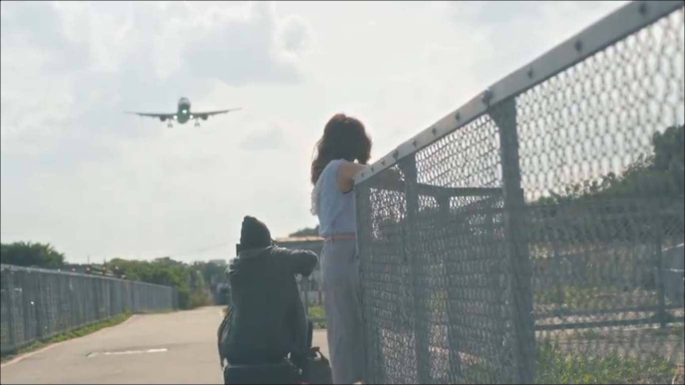

此番削发以后，到需要再次剃发之前，夜晚也能静静生长。
喜欢《白蛇传·情》某唱段如是：觅觅觅，觅得情痴戏中演，演罢浮生几重爱恋……从小我就喜欢戏，记得有一次几位死党去多媒体教室看《唐吉坷德》，大家都觉得无聊，我立马被迷住，死党损了我一句，就把我们带离教室。还有几次是语文课上放的鲁迅边抽烟边写小说，镜头很慢，旁白大概就是鲁迅自己吧。我喜欢很多人一起看点儿细语气氛，《骆驼祥子》没看完，在鲤城的一年，《茶馆》承载了我诸多对古城的想象。街道都没去过，教堂，戏台都只是QQ空间的一句几经揣摩的誓愿。那时不懂法，不知道近现代要是没有鲁迅则更是一片荒芜，倒处处都在法，都在史记。
“从小就是看这些长大的”这句话说出时，只有感情那部分是真的。死党没接茬，我们那几个死党，就是瞎混，经不起岁月静好，浑身肃穆。卡萨维茨的《面孔》里有一句台词表达了这样的意思，说朋友一定不会严肃，严肃的就不是朋友。用另一句话回敬，便是“唯有好人之间才有友谊……这样说，还是厚道了些。”我们不再联络数年，我补完《平凡的世界》，算是长大了努力圆回小时候扯下的谎。若再对自己诚实些，不去美化人间少年，丑态大多就是偶见虚荣，当下自行形秽，写字冲着投稿而去的，加了亲人的联络难免遮遮掩掩。大概，坏人不必人追赶也会逃跑，还无底气当坏人，造作先行自戕。
我问阿公，还不习惯用这样的力道说话：“有没有什么好听的戏啊，报我试看。”他说，他看电视比较多，高甲戏，京剧啥的这些有时听听而已，有的难听死，电视也有戏曲频道啊。我怕老人家精神世界一片贫瘠，就跟他打听，回头下载几个片子瞧瞧。电话常年关机，堂哥邀我去银河广场，我发了一份《我们与恶的距离》给他，他说，是啊，这年头的电视越来越……开始就是结束。
我的电摩托是大家都觉得我应该多出来走走，我考虑到以后可能需要经常去花苑才答应买的，没想到左边在修一条小路，社区间笔直走过去可能不到十分钟。在成都的时候，浮现过许多像是后怕的撞车画面，总是在睡觉之前，引导着就能一直撞车下去。当我厌倦做这样的梦，画面里插入一段“都让开”的代码，开始就是结束。有了油比电贵的电摩托，还能去哪也未曾清楚，我只说，平时我也不怎么出来啊，有了没什么差啦。
我下了《与恶》、《孤味》、《白蛇传·情》、《大话西游》，连带之前的舞剧给外公，《与恶》与堂哥那边一样，我希望他们能全家一起看，惜外公的唱戏机偏偏只有《与恶》音轨不支持，兴许是因为三辈公他儿子也叫李晓明？《孤味》是献给这位几十年矜夫的，《白蛇》是我粗略地找找不到口碑良好的戏曲时突然想到的，《大话》就不必多言。偶然点进去豆瓣2021电影榜，许多新鲜面孔，《福音战士》、《花束般的爱情》……还是保持在“花束般的爱情”吧。回家后把唯一没有把关的《白蛇》看完，几天后又再一次看某些唱段，转头见镜前的表情一脸欣喜，才明白我又找到无时代的古典戏曲哇，回想其中打戏颇为精彩，肢体语言本就隽永，怎么落得如此地步呢，真的只是因为某些时效性的原因吗，曾记得《妻妾成群》中有一个女角，灰灰的绝壁间可好看好听，如果以前其实人人都能在戏台前有这样的体验，就像我不必在手机壁纸上才能见到，只要开出去大路旁边，随处都能见到一片葱郁的野田，那么非脸谱的戏曲没落的原因，就只能是“妻妾成群”了。当然，我又在含沙射影，“我们是小说的孩子，我们是电影的孩子，现在，我们什么都不是了。”
与《青蛇》相比，《青蛇》净化了色，而《白蛇》净化了空，净化了荷花、六月莲，顺带一说，上次我连续三天看了三遍《卡门》以后，又再看了几次。
接着，我替代李晓明去光前医院看病，不知道是不是学了些甲骨文，越发觉得这里像是日本。我在厦门也有过这种感觉，只不过不会是在海边和市中心。在这些地方我们也看过白娘子，夫妇俩吐槽道这样都可以啊，这么容易就一见钟情了啊喃喃，我却惊得说不出话来，这可是塔里再困千年啊喂……要有那种日本感，得有山，天蓝日光，律师事务所，医院还是在很高的地方，远房亲戚的感觉，言而总之，现代化中的村中城有些牌匾的字不认识。我不确定是不是和城市作了对比，还是这几年变化的原因，路没有那么脏了，街上也不是胡乱配色的广告牌。我不喜欢城市化，和我妈去银河广场，右边有人在攀岩，我们走走，我只觉得无聊。
为了试电摩托的电池，我独自去了趟花苑，钥匙是精美的，小区比照片里要新，客厅的大窗对面是一户住在林中的人家，有一只大黄见到主人边摇尾巴边周旋着，平日就趴在平地上看家，整片灰土地都是它的床。我会想起在诗山医院后面的那户人家。我们的新房是在4楼，屋里还有上次他们留下的乔迁之喜的气球，和一些牛奶软糖，有盆植物我拍下来又把它们删掉，这天我在看机核两三年前的一次关于游戏是否能成为艺术的一些内容。让我一时回答我到底在抵触些什么，我是回答不上来的，但让我回答游戏是否是艺术，我可以瞬间告诉人游戏不可能是。我真的不想再定义什么是艺术了，这样的事情早在日记中做过，而我把那些日记给了我第一次相亲的对象，她没多久就向我索要小说，现在我好奇她怎么样了，但我不会开口。“艺”这个字的一种字源，讲的是一个人在种植的事情，有关生命树，有关“帝”字，“帝”指的是一种庄园，或果园的主人。4楼对面是一座岛，小山丘，不自然，因为它下面是用挖掘机掘出来的沟壑填的路，荒谬的，无根的，absurd，abgrund，ab的意思就是“去掉”，远离土地的，不健康的，同样是四楼的高度，我们住在空中。好看是好看，为什么我还要认为现在是黑暗年代呢，有时真的会把自己问倒，特别是闲愁地四处逛逛的时候，也想成家，诗山，梅山，就算再怎么处在漩涡中，也还能是“Ume”山，酸醉的鸠摩诗力。
堂姐这几年老是叫我去学车，这次的理由倒有几分道理，自己不开，可以去找开车的工作。
我没什么买菜的机会。
镇与镇还不能互通的时候，一找到机会人们就偷偷祭祀。阿城说即便现在商业侵入，民间总有要在天安门前尿湿脸庞的。堂哥的儿子两岁了，见我们说了那么久的话，跑出来拉堂哥的裤腿。吃席饭的时候，我好像又坐到了一群姑嫂妯娌堆里，我总是被说年轻，像女人像小孩，坐里面不显突兀吧。答应和亲戚来往的时候见我妈一脸开心，其中有一点是她不用独自面对不知何时何人会带来的压力了。五叔手机晃一圈，说里面的小孩才两岁就会拿筷子，过后去了别的桌子，以前我总不给他脸面，现在想来，说不定他在偷偷酸我，哈哈哈，他的孙儿好像是两岁。
似乎有一种默契，众人避讳谈到我过去的恋情。可我时不时就会提起经历的事，无策略的，只觉我们该说点真话。说了许多话，我不再逃避粗略的表述，因为如果我再表达，会要更细致得多。对我妈这里，很自然地我引了许多大词大句，表明我的身份，认识的都是什么朋友，过去成就有多高，救了多少人，我孙爷爷可是带起了一片旅游业，以前发的论文够那些教授拿几个职称的了等等。她说我的发小他爸有一天喝醉酒把他骂醒，我说有时想想真该好好骂醒她。替三辈公办完手续，李晓明的父母就坐在我面前。他们俩都不识字，我告诉他们，我妈这几天和我谈了谈，想开了不少。跟他们说话，我很难用上什么“因为太过优秀所以找不到工作”。一直搞不懂人为什么会脸红，脸红这种情绪总是和人际有关。
两包五粮醇香是短支的，外公抽起细支的长白山，行走的祭坛啊，这种话我才不会说。被二辈公赶出来以后，他不仅老了一些，牙齿还掉了九粒。补上以后人精神不少，我们在外厅左右的房间里进出，我想到阿太，他也提到了阿太。阿太曾经非常疼爱我爸，就是把他当儿子的，所以我都叫这边的人父亲的称。据李晓明他爸回忆，我父母在结婚之前所有人都反对，只有阿太和我妈把我爸当宝。我补充道，我妈那时以为自己染了和我爸一样的病，都打算殉情了。说这些倒不是要多拔高我妈，只是疑问之间有某种需要解释的义务，矛盾是十分隐秘的，隐秘到拿到明面上来谈就太浪费。记得谁说我像我爸一样很负责任，我跟妈说这难道不是基本的吗，医生护士就该做到的，日子要真过得好，举手之劳就在救命。想的是那什么圣玛丽亚医院？一样的医患关系，“今天就当义诊好了”这种话都让人生厌。
病房大楼是新起的，进出需要刷脸。泌尿科护士站特别像初创公司，我是指字面意义上。充电宝旁边有家属外包公司的广告，陪护一天能赚两三百。病房里卫生间是马桶和淋浴，镜子很大，与家居的款别无二致。病房有三四张床，家属的椅子要展开睡得扫码，听说一小时7毛钱。护士站对面的大窗看得到一整片旷观绿植和大山，晓明的父母说那条溪叫做东溪，现在被旁边租去种植的影响，哪里没有兑现应该的治理。晓明爸怀念可以渡溪抓鱼的日子，在走廊的另一头大窗，我说，“这几年变化那么大，许多事情都是后代要付出的。”我又不自觉提到了小王，晓明妈问我，“是你不还是小王不”，晓明爸“ei”了一声对她抬了抬头。其实不必事先就准备好什么，我同样也会对他们有疑问，比如就算再怎么是子女自己的事，晓明过去欠了那么多债，二辈公那边儿子吃了那么多精神药物，还有以前怎样毒死儿媳外婆怎样自杀，至少，我觉得二辈公还能实现农村的自循环，吃自己，我还好奇怎么种田。
“全世界没有一对父母会愿意花二十年的时间养出一个杀人犯。”
剧中的李晓明，是我略微钦佩的角色，给我的是最早接触存在主义的那种荒谬与神秘。同样，从小我在医院长大，也听过有护士私自掐死婴儿的事。《枕头人》里好像有一个寓言，专杀遭到不幸的孩童。只取荒诞感的话，我竟有些思念那种更冷一些的孤独，现在我想把握那种孤独，试着去回忆：这些年我接触过加缪，萨特，冷不丁算上老海，存在主义这个词似乎不再那么特别，如果我贪恋的是差那么一步就到了虚无主义的那种孤高不恭，感觉总是一瞬的，但总是种感觉，而不是纯粹逻辑真理的那种毫无波澜。荒谬是各式的荒谬，神秘是各式的神秘，如果初恋般的荒谬感之间有什么共通点，也许是因为某个角色表现得简短，底气十足，与所有人不屑，秉持着隐蔽的更高道义而不彰显，日常中的基督，死不足惜，可是为什么他一点都不像疯子？关于李晓明这种气质人物的合理性，我想在游戏里呈现，总感觉有一种另类基督，没有日本军队进村拜完佛屠杀四方，镜头要再少些，不能那么残忍，对了，与《怪物》中的约翰特别像，不是活着殉道，而是知道自己什么时候该死，得是个美少年。不是背后都有一段心碎的往事，不是多么惨多么可怜寂寞没有人理解，而是就算将背后的故事拉出来，人们会为他们自己是多么卑贱而触怒。
《与恶》将更多的戏份给了别人，回想起来各个地方张力特别足，情绪的触动到现在都还能复现。我看《首演之夜》，觉得有些地方女主在戏台上才能有真性情，假的拍得跟真的似的，如果我也有一个剧组就好了。而《首演之夜》那一点点奇怪间歇的悲悯，我觉得是胜过《顽主》的，就是这一点点又奇怪又隐忧的韵味吧，我所谓“初恋般的荒诞”，是去掉煽情《一生所爱》的《大圣娶亲》结尾，紫霞也笑他好像条狗，然后抱着至尊宝皱眉孙悟空，连相识都没有，更算不上同情，疑云不消，那人似曾相识。
说了那么多，当然不严谨。李晓明那么做自然要逼出一点有其必然性的可能，我曾读《罪与罚》快要昏聩，不知是译本的原因还是读的方式不正常。如果对社会毫无用处的阿婆可以杀，那对注定要受难的儿童下毒手都可算高尚咯。只是人家是随机杀人，工具人当得还有点合乎情理。案件原型犯似乎是真虚无，我只知道他爱看《海贼王》，不是读了什么尼祛超人哲学。
李晓明过来后，我觉得他变胖了许多，听说现在自己在承包些制鞋的工作，妻子有些眼疾，好在还没见过有人嫌弃她。大家都有钱有家庭，就我一个要回去当和尚。
我说看看下一个能不能不会。网店不想开。钱够吃就行。我在做游戏和电影，并不打算赚钱。再过几年再成家吧，近期不想，谁32岁才订婚呢……倒不是被动，我觉得我有解答的义务，有没有话锋倒不是很关心，我担心自己话语过重，只是如实道出。就算我不先做恶意的揣测，晓明父母之间还是流露出两人的冲突。晓明妈在光前医院做保洁，待遇不错的样子，我觉得老了我也要去做保洁。她说，农村现在没什么女人了，都跑去大城市，可能同时也是说给丈夫听。
在我爸那边，我说了一些要做的游戏，说哲学，说亲密关系，都是泛泛而谈。我真的读过太多告诉我女人有多无能的话，钻得太深以至几近对女人绝望，读到原本只是用来比喻的词涉嫌过多真实。我妈说我跟她一样长得不成熟，不被信任，我倒奇怪，为什么神通要为技艺崇拜的平庸负责，应思聪那么年轻，就该当导演啊，20岁左右如果还不出伟大作品，陈老师所说，如果年轻的时候还在那边写什么狗屁论文，也别当什么艺术家，天才都是年轻的时候就拥抱不朽。
现在，我想要正面回答游戏的问题，和“你能怎么办呢”的问题。
孙爷爷说鲁迅在一些地方只是个起码的程度，让他评论，他也不懂的。对西方思想也不透，要么透，要么不透，你不能说不太透。搞了半天人不能连什么是好都不知道，连美丑都不分。
我试图分清找出美感共性的必要，虽然我对这种共性滥竹于胸，张口就来。美人不需要是雕刻家，圣徒不需要是哲学家，吃了颗蛋不需要去问候它的老母鸡下蛋之间有什么共同体验,评论的必要到底在哪里，难道总结式的复刻会比用艺术评论艺术更好？我说，哲学对我来说就是讲故事，顺带治疗一下哲学病死道理。懂那么多道理，也在过好这一生，却不愿和人辩论，当我高估他们，我会觉得他们是死鸭子嘴硬，给了三分面子，要不是亲眼见到虚无主义者，我真的不愿相信有也不愿与这些人打交道。
友人说，《妈的多重宇宙》是21世纪以来最好的电影，因为它直面了21世纪这20几年来没有一部电影正面应对的（时代）问题。如果是这样，那我的精神长子可是21世纪以来最好的小说咯。这样说还是不准确的，我23岁写出《三又三分之一》，只是顺便回应了一下虚无主义，什么大数定律意识永生宿命机械黑洞量子愿望机病毒寄生虫变成无机物，时髦又俗套的设定全都用上了，本质上还是组诗。德剧《暗黑》的三重世界，悖论啊死亡啊跳火山穿越，就是借着搞文艺，轮不上谁学谁的。想不到竟有人，而且是那么多人要信，这获得性格就没个限制吗。当然我没有印成铅字，不会在地铁见到有人捧着我的书泪流满面，我要说的是，尽管我很不齿我的长子，这多半也是早忘光它了的原因，尽管重来我很可能不会再给那么多正面回应，而是像忘记年岁的人朴素抒情，尽管这样，《三又三分之一》放到现在也依然是时髦到不能再时髦的玩意，诗意大得没边儿，如果我在多重宇宙带着它上知乎的活动，不知道要给多少个奖镀金，就像我接下来要拍的电影一样。没错，一个艺术家如果在作品完成的时刻没有这种自信它将永垂不朽，还是滚去写什么狗屁论文吧。一个人能那么蠢相信什么the only truth is nothing matters，还值得专拍一部电影说教，当然，没有人认为就算道理讲得好也衔接了现实那就是部多么好的电影，我是说，你们到底有多荒芜？要不是这几年我见到的男女，特别是很不幸印象特别深刻的几个女人连什么是爱什么是喜欢都分不清楚，我才不会像他们惊怒世界上竟然有我这种人一样惊怒他们有多么愚蠢。其实我知道，不然我也不会懂约翰，不会懂李晓明。李晓明是真的信了，世界上没有一个人配得上他，这些年我这么绝望，根本不必研读著作，一个人只要持续认真生活，绝望时刻笼罩，人们以为文学是什么？口口声声爱情，在B站看的都是什么玩意儿，看的都是什么下三滥动漫电视剧，读的都是什么三俗畅销书，玩你妈逼的游戏，考个杰宝的研，赚你艾死必的钱，我怎么这么说话……不仅要这样说话，我还要学习应思聪，高看别人一眼，努力罗织怒骂：……不行，我试图像别人爆粗口一样“当你妈唯一的读者！”，戏瘾过后，找不到目的……
不知道人间荒诞到父亲光明正大将女儿委托的手工娃娃载到偏僻的拐角去卖，只为防止女儿一心钻研志趣而荒废考试，硬是从逼孩子去卖淫上看出伟大来有多么稀松平常。要改，我能告诉人们，人并不必艰深，不需要陀式红楼浮士德，我也喜欢李健史铁生余秀华，喜欢林宥嘉的气质，并不必“于情于理于势都叵测地表达苦痛”，也可以“如果不够悲伤就无法飞翔，可没有梦想何必远方。”我喜欢《与恶》久违了的片尾感，既指片尾曲，亦指第一部大结局。
我当然是正确的，所谓“正”，就是在生命树，身体的圣殿面前停下脚步，所谓“止”，就是脚印。问我我能怎么办，当时我心里说：我能不参与。只说了一半。另一半是，我要改变这个世界，我要推翻不列颠尼亚。如何？成为周天子。何谓周天子？友人说，道德的最高范本。他们说，这个世界是物质的，简直废话。
Goodmorning问我，你们就没有什么组织吗？现在我才回答，有啊，艺术家就是失散多年的组织。社会？现在的社会就是社交恐惧集会。好奇？我知道你不是好奇，你是来猎奇，为了你的人身安全，我不想改变你。禅本就是少数人的事情，既是数量，亦是质量。
友人解释道：透明度。我要帮他说话。首先，透的是什么？然后才能明。显然，透的是自在之物，呸，又来自在之物？透的是真情实感，透的是天赋人权。建筑，建筑本身的内在质感，石与石间的夙怨。圆谁的愿？剧院可以用来斗兽，斗兽场可以被当成斗牛仪式，不干你建筑师何事。什么叫像《超级马里奥》一样展现玩本身？我承认我玩游戏的方式和流俗之人不同，我要做的游戏改天我还要换种名字称呼它，难道，我要重新定义游戏？机核那么多煞有介事的文和言论，有几个敢再进一步的？很起码的嘛，游戏不是艺术，《超级马里奥》不是，建筑的用途也不是建筑艺术。首先，大多数游戏的操作本身就是虚假的，是为了赢，为了有挑战，是可以重来而不走心的，是就算走心也是剧本、音乐，和镜头叙事之功劳的。《超级马里奥》得进行多少脑补，才能是艺术家让游戏变成了艺术？其次，撇去关卡设计、奖惩，和其他商业上的考量，我也不说光在画面上游戏和动画（漫）要做到非常拟真（取内在性之真）程度并衔接上所谓超越性有多难，而且，你们对超越性这个概念是不是有误解？意思是说，可不可以把基本的旨趣先搞清楚，比如说，恰如其分的客体化和只有客体化这对概念？我厌倦那么多反问了，我想说的是，步行模拟器的操纵和打开阅读器进行《艺术何为》的阅读的操纵没有差别，不要再有完美复刻现实这样的迷思了，才不是一比一的关系，是寻味着的种子关系，解释“是什么”，事情本身，不要再变成另一种程序式的斑点过程了。恕我直言，“男人”的意思就是不孕动物，我与前女友分手，雾霾拆不散我们，穷拆不散我们，是她的尼伯龙根之环拆散了我们。我去机核，期待的是人人都在列举吹哥所谓的“不好玩的游戏”，能知道谁又做出来一个超验游戏了并且前去感受。在梦宇宙里我进入3D版的《梦日记》，我没有说它是艺术，但我的启发是也许光靠剧情本身的魅力，玩家也不愿入戏。有相当程度的不自由才能保证玩家成为别人，毕竟，游戏不是生活，生活没有终点，传宗接代的行为日常就是伟大作品本身。
所以，如果人还在靠钱靠势力解决问题，就承认自己兽性野蛮，承认大多数工作承载不了太多意义，因为那些本属必须的事业已经过剩，许多人要生存就得靠欺骗人来购买那些根本不太必要的东西和服务，那至少能有些尊严。反正几年后我再去断桥，我再也不怜恤在失败上不能获得一点尊重的女人，以及那些成功的女人。人生的唯一一次相亲，跟我说“你这样找很慢的啊[气气]”，我能有什么办法，至少比起不知换了多少男女朋友，基本的守寡都做不到的人，我更有资格谈论爱情。多数人是没有爱情的，承认这点，也不能保证些什么。至少，我在找的人啊，可以请你看在世上还有不少我这样的女权主义者的份上，好好吃得健康些吗？《妈的多重宇宙》里，就算结局看似美好，女同的问题还是回避了。我毫不避讳，那种同性恋就是儿戏，矫揉造作，作为一个过来人，本着负责任的态度，我要告诉人们我就是歧视残疾人，“请不要歧视残障人士”，WOW，“残障人士”。多虚伪。
哎-------，又有几个人读过《东宫西宫》，知道王李夫妇声援各种恋同志是在声援什么，别跟我说他们就是名副其实的在声援呐，如果是，我承认我不学无术，然后取关，退会门下走狗。还有，杜尚那种观念艺术称不上我们要谈的艺术，引起人反思，我不喜欢，不是谁都玩得转恶心。
我想再看一遍《白蛇传·情》。我知道故事本身并不复杂，触犯天条这点看起来也像是机械降神（但不是）。还要买冰箱到花苑去，我的财产是4000元。准备自己付冰箱的钱，我的门牙后面的肿块，和下嘴兜的牙龈增生，好不了了，不知道是不是之前上班的原因。我是一个拒绝卫生院安稳工作和诸多发财机会、扬名立万的人，我这么好，小心有人要王位不保。我自恋到疫情期间以为政客都没办法，从我和母亲的对话中偷师。我要编的情节震烁古今，画的画值百万，但艺术家地狱不空，誓不成佛，不是很起码的吗……不要以为那是什么太过分，地藏王愿意骗人，人应该感恩。可惜我做过最下层的工作，知道世界有多不公平。得知阿公去录一个影片就要10多块，我妈进不去一个HTTPS网址请人来就要30块，现在我依然觉得赚差价可耻，也为自己在逃避买卖可耻。希望能成为王赦那样的法扶律师，愿做的事不被明码标价。不用再让大发降下天罚了（不要再自恋了（我再自恋点怎么啦……）），不要再问我为什么偏偏是湖北了，你说“世上唯一不变是人都善变，每次并肩都是擦肩”，希望你是屡着薄冰化解“希望你的儿子被害时你仍然那么宽容”。不然她不配当父母，那时人要小心，不是我们的子女要决一死战，就是你们的子女要和你们决一死战。而你们杀了我们，正如希律王要杀耶稣，要是你们没那么狂，又是在假谦什么？我不是个乐观的人，时至今日，我依然觉得多数人不配当父母（官）。可我走在溪边，整条绸缎像烟波一样断裂又再次成为绸缎，走几步就能见到牛神悠闲地嚼草，走回两步初生不久的狸猫是两只仙子，我们驻足挑逗，我再次在这么近的距离看见不那么怕人的小猫逃得只顾脚下的山坡太陡，随时都能抱回家，我就会忘记大发，忘记那个踢走大发的女人。
我也会衰老，也会失业，也会死亡，那又怎样。总觉得人们在误解本末倒置，那个人还没出现，就在张罗房子与工作，那个人出现了，总以分工不同当借口，连后悔都不敢，谈什么洒脱。我教人以灵修，人佛仙妖，许仙就是法海，白素贞就是小青。喜欢千回百转的日常，唱的每个字都在痴情。山林是我们的婚房，茶与水是绝配。雄黄是鱼腥，把空心菜的梗埋进土里，一茬一茬疯长。原本世间的奇妙就是有的种子是大树，有的发财树不喜湿润，百合只要浇水会朝向太阳，剪掉哪的烂枝即发新芽。杜鹃花的花期只有一个月。可怜。可怜圈钱营养土，奈何网商百姓间呐~~~（收袖）。
我的色图都是画手做的，G站和T站发展成了Yandere和Konachan，这样我才清白。另一方面，我觉得在自然的状态下，人并不是通过点线面去还原画面的。直接拿来用，勿论作何之用，都是更自然的状态。
王朔说，“你们谁反过自然啊”。他说，我他妈就是一共产党，不知道为什么当时我热泪盈眶。其实我很爱国，爱的是火焰山那个古有中国，爱的是米底王国。
不喜欢二姨说我没痛过，不懂得怕，谁没死过，仍要做好迎接惨死的准备。
晓明的妈妈大概也不懂如何粮食自循环吧，小时候我偷过他们家的钱。真的厌倦逃离了，如果早些时候大家都听得进我的话，也不用多年之后再来细数自己的逃跑有几条原因。如果能再来，或许不会再爱上一株需要付诸抽象能力的小草，或许不再害怕失业会被小草讨厌，找的也不会是作息难堪的工作。或许我们还相爱，小草回到了乡村，花终于会开。
可以学习当时的林伯，在校期间将学校图书馆所有花卉的书籍都看了，去梦宇宙里耕种。
将光之子造完以后，真正严肃的事情才要开始。